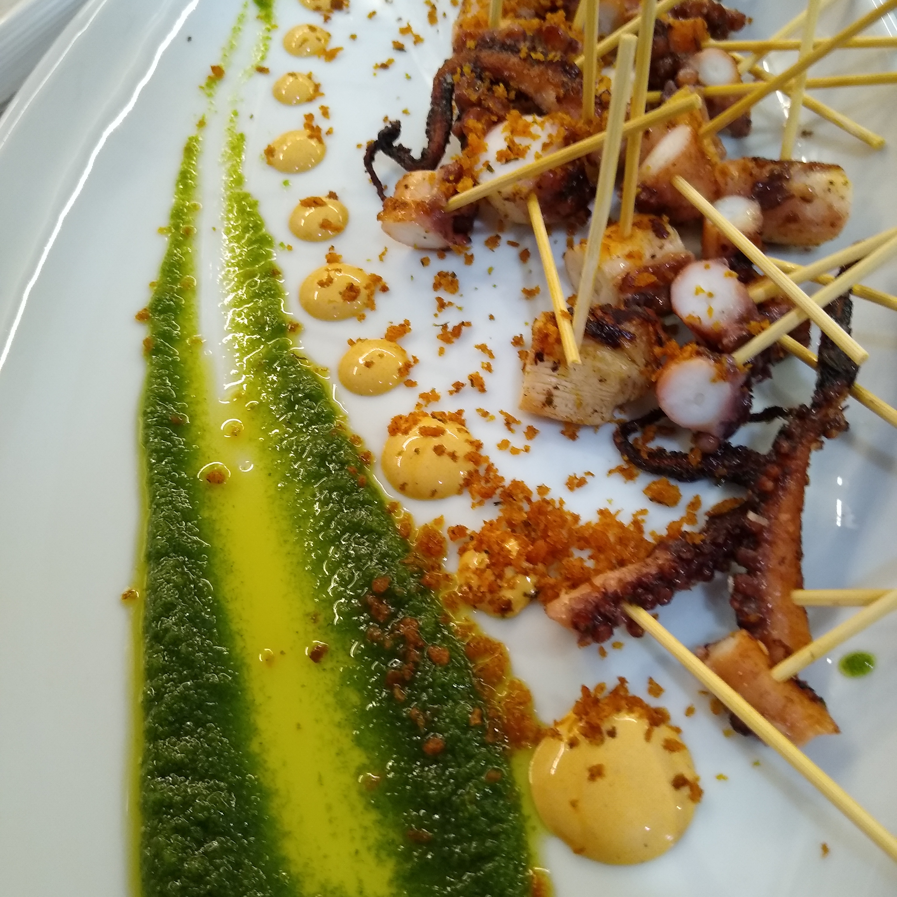
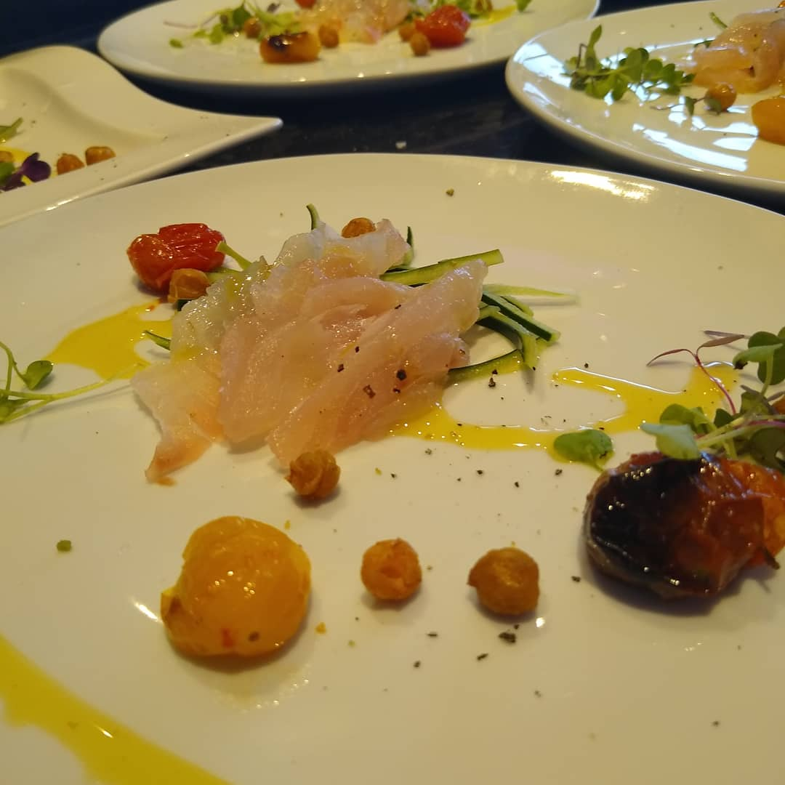

 Decided to take on the coding world FULL FORCE and after 15 years of being a professional chef... I'm officially BURNT decided I would persue my main love of technology and how websites And programs work on the Internet and beyond. If you made it here, Thank You! and hope you enjoy my creative mind in the world of Development! It all starts as a young kid, watching food network. I remember shows like Iron Chef (the REAL Iron Chef not the American BS it is today), Good Eats, the lot.... I thought the food biz was so glorious and an awesome way to make some dough, it helped that I have a natural talent for food and flavor profiles so I was able to master techniques rapidly, be it, in culinary school or in the field, in working kitchens, getting your ass KICKED for a whole 10-12 hour shift with your head down. Making money for someone that dosen't care weather or not you can make your rent but rather you fill the stomachs of the guests... and their pocket....  It's not all a shit show though... The people i've met on this journey are some of the best in the biz (also some of the worst...)but without most of them this road would of been VERY boring and tedious... To survive in the kitchen is like a game of your favorite "Battle Royale" where the Managers are the Elite Hackers who managed to cheese their way to the top and not get caught out... and the Try Hard type that think they are the only reason the place opens in the morning. I've never been one to go on an EGO trip as most chefs tend to do, and I've worked hard to becoming a fairly successful Privte chef working in clients homes preparing luxurious meals... I run by the motto "Your House, My Restaurant." making people feel as if they have left their home for the night and stepped into a fine dining establishment to be served a high end 7 course tasting menu. But it comes with a price, as everything does... work/life ratio is WHACK wether you hustling for Yourself, or Hustling for an employeer.